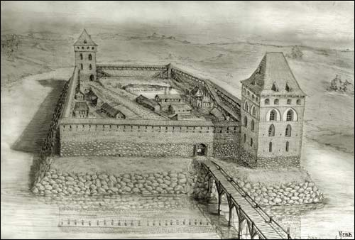
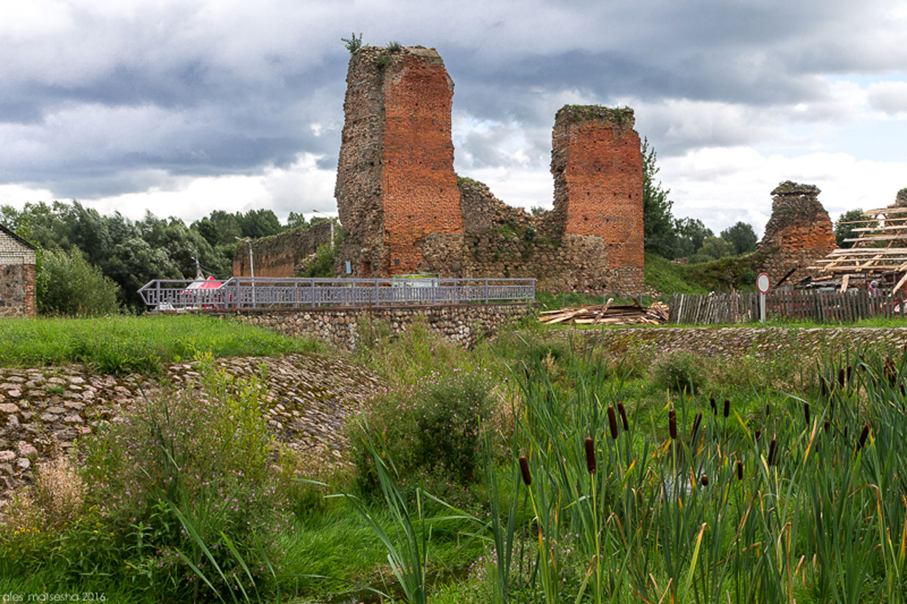
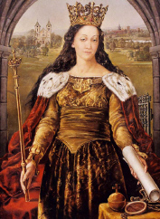
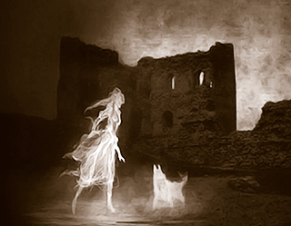

Кревский замок был построен во время правления великих князей Гедемина и Альгерда в первой половине 14 века. Возведено это оборонительное сооружение на семи холмах, в месте слияния речки Кривлянки и ручья. По диагонали размещались две башни. Для того, чтобы выдерживать длительные осады на территории замка был пруд. Поэтому при достаточном запасе воды и еды его захватить было практически невозможно.
В историю Кревский замок вошел несколькими историческими событиями.
В 1382 году в Большой башне по приказу Ягайло был задушен претендент на великокняжеский трон его дядя Кейстут. А в 1385 году здесь была подписана Кревская уния – соглашение о династическом союзе между Великим княжеством Литовским и Королевством Польским. В результате этих событий Ягайло, вступив в брак с польской королевой Ядвигой, провозглашался польским королём.
Замок неоднократно захватывали то крымские татары, то местные мятежные князи. Из-за многочисленных войн замок был сильно разрушен, в 1518 году немецкий дипломат Герберштейн, проезжающий через это место, записал: «Крево – местечко с опустевшей крепостью». Наибольшие разрушения нанесла замку 1-я мировая война – целых три года через Крево проходила линия фронта, а замок использовался немецкими войсками как оборонительное уерепление.
На сегодняшний день замок представлен в виде руин в небольшом поселке Крево, недалеко от города Сморгонь. Туристы могут видеть сейчас только стены постройки и небольшие части от башен.
Кревский замок – это первый замок в Великом княжестве Литовском, который полностью построили из камня. Его возвели в далеком XIV веке по приказу великого князя литовского Гедимина. Вместе с замками в Лиде и Новогрудке он входил в линию защиты против крестоносцев. Кревский замок относят к типу «кастэль». В плане он представлял собой неправильный четырехугольник, с двумя башнями разных размеров по диагонали. Толщина замковых стен была около двух с половиной метров, а высота около тринадцати метров.
XVI век для Кревского замка был нелегким временем, в этот период то и дело совершались его осады московскими и татарскими войсками.
Уже в начале XIX века замок перестал являться оборонительным сооружением и из-за ненадобности был заброшен. В годы 1-ой Мировой войны стены сооружения сильно пострадали и привели замок к очень плачевному виду руин, которые были законсервированы в 1929 году.
|  |
Призрак кревской красавицы бродит по округе с незапамятных времен. История гласит, что на руку девушки претендовали сразу 2 князя. Но гордая красавица никому из них не отдавала предпочтений. Победив на дуэли, княжич предложил красавице руку и сердце, но та отказалась, поплатившись за это жизнью. Князь приказал слугам замуровать ее в стену замка. Вместе с девушкой замуровали и ее собаку. С тех пор, как утверждают местные жители, дух девушки с собакой постоянно гуляет в окрестностях замка. Но встретить ее — не к добру. Тот, кто заговорит с красавицей или прикоснется к духу ее собаки, рискует собственной жизнью. А еще девушка нередко сулит людям богатства, стараясь спровоцировать их на дурные поступки — например, воровство. |
|  |
Эта легенда продолжает предыдущую. По преданию девушку можно было вызволить из крепости. Но свободу узница получала, если ее спаситель совершал серьезное прегрешение или даже святотатство. Один раз девушка попросила юношу, который пытался поговорить с ней, украсть золото из костела. Взамен она получит свободу, а юноше достанется ларь с золотом. Молодой человек так и сделал. Но когда он попытался выйти с награбленным из костёла, не смог переступить порог. На улице бушевала страшная буря. Тогда юноша бросил церковное золото и сбежал. С тех пор девушка продолжает жить в крепости. Но теперь она утратила былую красоту. Сама превратилась в старуху, а собачка - в скелет.
|